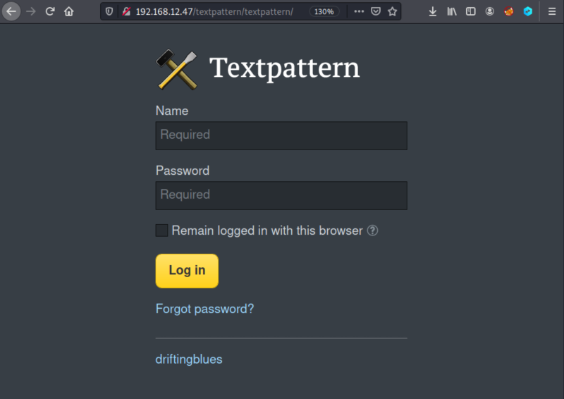
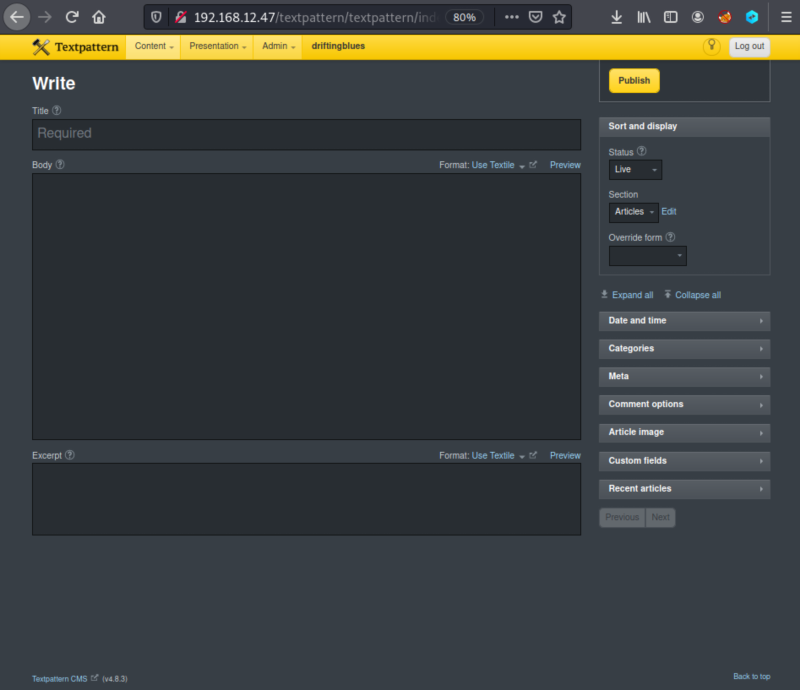
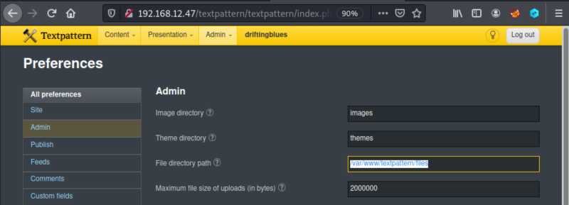

4.1 Log in “Textpattern”
1. Visit http://192.168.12.47/textpattern/textpattern/ and log in with the credentials
mayer:lionheart.

You can see at the bottom of the page the Textpattern CMS (v4.8.3) version.
2. Go to “Admin->Preferences" and you'll see the File Directory Path “/var/www/textpattern/files”.

That's the directory where you can upload more files.